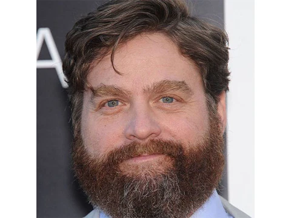
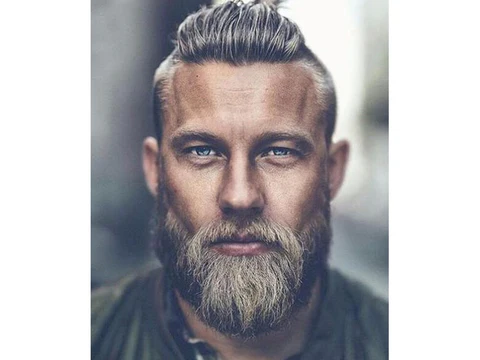
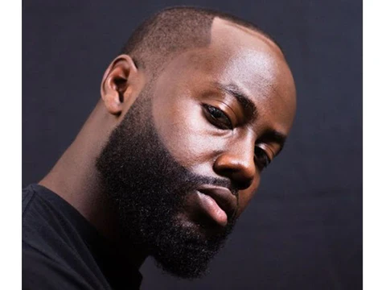
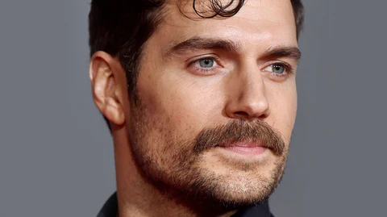
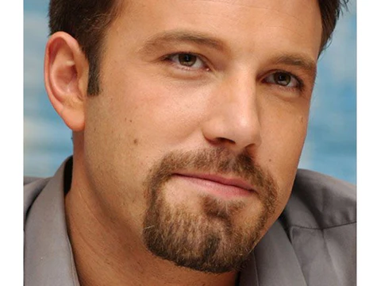

Fade (Degradê)

O fade, também conhecido como degradê, é um dos estilos de corte mais procurados atualmente. Sua
principal característica
é a mudança suave no comprimento do cabelo, começando bem baixo nas laterais e
aumentando gradualmente em direção ao topo.
Há diferentes versões desse corte, como o low fade, que possui
um acabamento mais discreto, e o high fade, que cria um visual
mais marcante e destacado.
Undercut

O undercut é um corte moderno que combina estilo e personalidade. Sua principal característica é o contraste entre as
laterais
e a parte de trás mais baixas ou raspadas, enquanto o topo do cabelo permanece mais comprido. Esse corte
pode ser finalizado de
diferentes maneiras, como penteado para trás, com textura ou até em estilo moicano.
Além disso, sua versatilidade faz com que
combine com diversos tipos e texturas de cabelo.
Corte Militar

O corte militar é um estilo clássico que nunca sai de moda, perfeito para quem procura praticidade
e um visual sempre alinhado.
Ele possui laterais bem baixas ou raspadas e o topo curto, garantindo facilidade
na manutenção do dia a dia. O comprimento pode
variar de acordo com a preferência de cada pessoa, mantendo sempre
a aparência limpa e organizada. Esse corte é uma ótima opção
para quem prefere um visual mais discreto e tradicional.
Corte Americano

O corte masculino no estilo americano é uma escolha clássica que continua sempre em alta.
Ele se destaca pelas laterais mais
baixas e pelo topo um pouco mais comprido, criando um visual
equilibrado, natural e elegante. Esse estilo é ideal para quem
deseja unir tradição e modernidade no mesmo
corte. Além disso, combina muito bem com diferentes tipos de cabelo, incluindo
lisos e crespos.
Moicano

O moicano é uma ótima opção para quem gosta de um visual mais marcante e cheio
de atitude. Esse corte se caracteriza pelo
maior volume no centro da cabeça, enquanto as
laterais ficam raspadas ou bem baixas. As versões modernas do moicano podem ir
desde
estilos mais discretos até os mais ousados, com fios desfiados, texturizados ou até com
cores diferentes, trazendo ainda
mais personalidade ao visual.
Estilo V

O corte masculino em estilo V tem se tornado cada vez mais popular por seu visual moderno e diferente.
Ele se destaca pelo
desenho geométrico na parte da nuca, formando um “V” bem definido. Esse estilo é indicado
para quem busca um corte mais marcante
e pode ser combinado com outros tipos, como o fade ou o undercut.
Além de trazer mais personalidade ao visual, o acabamento em
V deixa o corte mais limpo e bem estruturado,
funcionando bem em cabelos curtos e médios, lisos ou cacheados.
Tapper

O taper é um corte que lembra o fade, mas de forma mais suave e discreta. Nele, o cabelo vai diminuindo
gradualmente do
comprimento nas laterais, especialmente nas têmporas até a nuca, sem aquela transição mais
marcada típica do fade.
Esse estilo é conhecido por sua elegância e simplicidade, sendo uma ótima escolha para quem
prefere um visual mais clássico e
versátil. Ele funciona bem tanto em ambientes profissionais quanto no dia a dia, combinando
facilmente com diferentes estilos.
Caeser

O corte Caesar é um estilo curto e com textura que vem se destacando bastante nos últimos tempos.
Ele se caracteriza pela franja
curta e pelo cabelo levemente direcionado para a frente.
Conhecido pela
praticidade, é uma ótima opção para quem busca um visual limpo e fácil de manter no dia a dia. Além disso,
combina
com diferentes tipos de cabelo e pode ajudar a disfarçar entradas ou sinais de calvície.
Para um
visual mais atual, o Caesar pode ser combinado com um fade nas laterais, trazendo um toque moderno ao
corte, seja em cabelos
lisos ou cacheados.
Corte de Barba
Stubble (Barba por Fazer)
Conhecida como “stubble” em inglês, a barba por fazer transmite um visual mais casual e despojado. É um estilo clássico, atemporal e muito popular, principalmente por unir praticidade e elegância. Quando bem alinhada e com o desenho definido, passa uma aparência de cuidado sem perder o aspecto natural. Ficando entre a barba curta e a barba mais cheia, esse estilo oferece um equilíbrio perfeito entre simplicidade e presença. Dependendo da velocidade de crescimento dos fios, a barba por fazer ideal pode levar de alguns dias até algumas semanas para atingir o comprimento desejado.
Barba Arredondada

Muitos homens têm dúvidas na hora de mudar o estilo da barba por causa do formato do rosto. A barba arredondada é uma excelente opção de barba curta para rostos redondos, quadrados ou em formato de diamante, já que acompanha as linhas naturais do rosto sem criar muito volume nas laterais. Em rostos mais largos, excesso de volume nas bochechas pode deixar a aparência desproporcional. Para conquistar esse estilo, o ideal é deixar a barba crescer por cerca de um a dois meses e depois manter os fios em um comprimento uniforme, garantindo um visual equilibrado e bem alinhado.
Barba Viking

Os vikings ficaram conhecidos ao longo da história por sua força e espírito guerreiro. Além disso, é impossível falar desse povo sem lembrar das barbas longas e marcantes, que se tornaram símbolo de masculinidade e presença. O que antigamente servia para proteger o rosto do frio intenso durante o inverno acabou se transformando em um estilo muito popular atualmente. As barbas vikings vêm ganhando cada vez mais destaque por seu visual imponente, ousado e até intimidador. Para manter esse estilo, é necessário ter paciência no crescimento dos fios e investir em cuidados frequentes, garantindo uma barba cheia, alinhada e com aparência saudável.
Barba Boxed
O estilo boxed é muito popular entre atores, celebridades e homens que gostam de um visual elegante e marcante. Ele combina uma aparência imponente com um acabamento alinhado e sofisticado. Esse tipo de barba é ideal para quem deseja se destacar sem exagerar no visual. Trata-se de uma barba cheia, mas bem aparada, com contornos definidos que deixam o rosto mais harmonioso. A manutenção é relativamente simples, já que os fios costumam crescer de maneira uniforme. Por isso, é um estilo prático para manter em casa, exigindo apenas retoques frequentes para conservar o desenho limpo e bem cuidado.
Barba Balbo
O Balbo é um estilo de barba marcado pelo bigode separado da barba principal e pela ausência de costeletas. Esse visual cria um acabamento moderno e estiloso, além de combinar com diferentes formatos de rosto, especialmente para homens com o queixo mais fino, já que ajuda a dar mais volume à região. Uma das maiores vantagens da barba Balbo é sua versatilidade, podendo ser adaptada de acordo com o gosto pessoal de cada um. Por seu visual elegante e atual, esse estilo se tornou um dos mais populares e vistos atualmente nas ruas.
Barba Alinhada

A barba linear se destaca pelas laterais bem definidas e pelas linhas marcantes que acompanham o rosto até o queixo. Esse estilo ganhou bastante popularidade por proporcionar um visual moderno e alinhado, além de ajudar a valorizar rostos ovais e redondos, criando uma aparência mais alongada. Para manter o desenho sempre bonito, os cuidados com a manutenção são essenciais, já que o crescimento dos fios pode fazer o formato perder definição rapidamente. Apesar de ser um estilo relativamente prático para retocar em casa, é importante ter atenção ao redesenhar a barba, pois pequenas mudanças podem alterar bastante a harmonia do rosto.
Barba e Bigode (Chevron)

Está em dúvida entre usar barba ou apenas bigode? Uma ótima alternativa é apostar em um estilo que combine os dois, criando um visual moderno e cheio de personalidade. A combinação de barba e bigode ganhou bastante destaque nos últimos anos e continua sendo uma tendência forte. Nesse estilo, o bigode costuma aparecer mais longo e volumoso do que os fios ao redor, tornando-se o principal destaque do visual. Além de estiloso, esse tipo de barba permite diferentes variações e combina com diversos formatos de rosto.
Cavanhaque

Se você não consegue deixar a barba crescer de forma uniforme ou prefere um estilo que exija menos manutenção, o cavanhaque pode ser uma excelente escolha. Esse visual, que fica entre o bigode e a barba completa, transmite elegância e personalidade quando bem cuidado. Além de prático, ele pode trazer um aspecto mais sofisticado e moderno ao rosto. Para que o estilo combine melhor, é importante considerar o formato do rosto. O cavanhaque costuma valorizar principalmente rostos redondos ou alongados, já que acompanha naturalmente o desenho facial e ajuda a equilibrar a aparência.